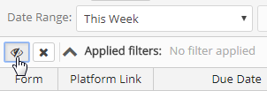
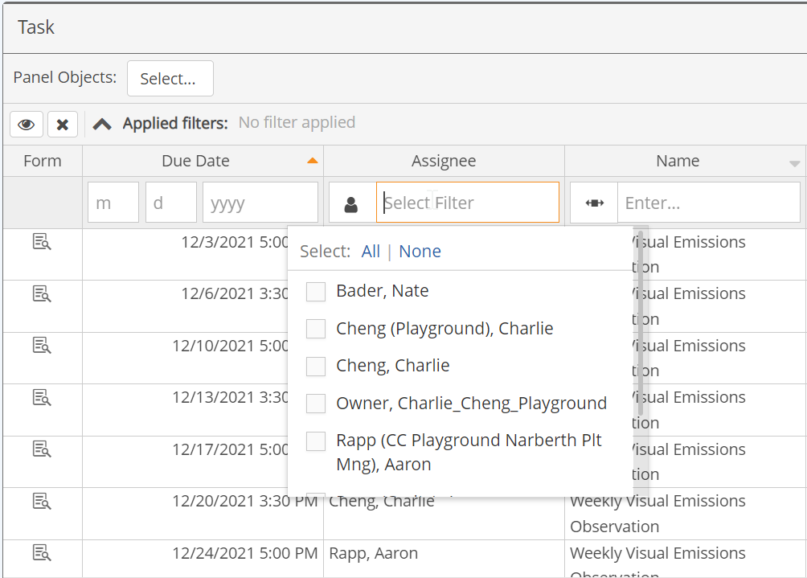
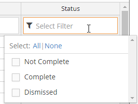
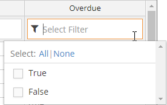
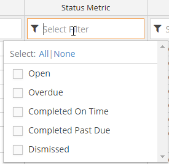
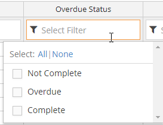
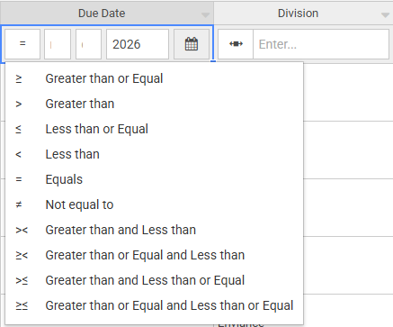
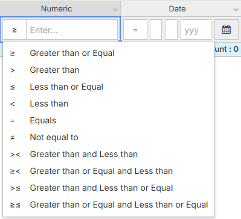
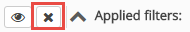

You can sort and filter tasks by column values in a Task Panel. The default columns shown in a task panel include The default columns displayed on the Task panel include Due Date, Name, Path (of the associated requirement), Requirement (name of associated requirement), Assignee, Status. Additional columns may also be displayed.
Common ways to filter tasks are by Assignee and Task Status.
Select the filter field at the top of the Assignee column.
If filters are not visible, click the visibility icon next to Applied filters at the top of the panel. A filter row will be displayed under the column head.

Begin typing the assignee you want to find.
The list will be filtered for matches as you type.

Task Status may be displayed in different ways, depending on the columns available in the table.
The Status field shows Complete, Not Complete, or Dismissed for the status.

The Overdue column shows status for tasks that are not yet complete. You can filter for Overdue = True or False.

For administrative tracking purposes, you may want to see more information on task completion status. For instance, with the Status Metric column, the Completed Past Due and Completed On Time values give a view of compliance status for completed tasks.

Similarly, the Overdue Status column gives a more complete view of compliance status for not yet complete tasks. Not Complete and not overdue; Overdue means task is not complete and is overdue.

To filter by task status:
Select the value(s) to include from the list.
You can apply filters to other columns in the same manner.
To apply a filter, select the filter field to see options. For some fields you must click the icon to select a filter option first.
Text fields require choosing an operative: Contains, Does Not Contain, Begins With, Ends With, Is Empty, or Is Not Empty. You can then enter text to use in the filter.
Drop-down list choices will be presented for those field types. If the list is long, you can type a few characters to find the value you want. If multiple selections are allowed, the number selected will be displayed in the filter box. Click on the number to see the selections. Click in the select box to edit the selections.

To filter for users or groups, you must first click the icon to choose either Users or Groups. Then click the Select Filter box to see the appropriate list and make your selections. If the list is long, you can type a few characters to find the value you want. The number selected will be displayed in the filter box. Click on the number to see the selections. Click in the select box to edit the selections.

For a date field, you may enter a complete or partial date (for example, just the year). Date fields require choosing an operative.

Numeric fields require selecting a comparison type.

Click the X next to the Applied Filters summary.

All column filters, except for pre-configured filters set up by the designer, will be removed and the display returned to the default.